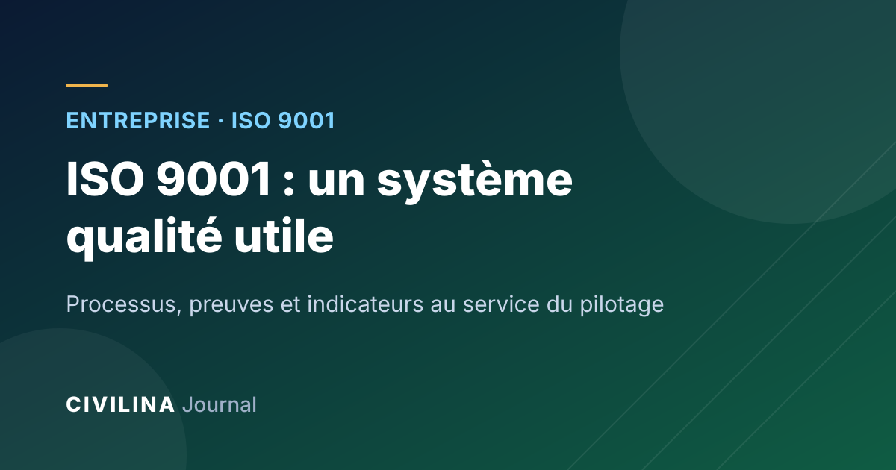

Accueil › Journal › ISO 9001 : un système qualité utile
Entreprise · ISO 9001ISO 9001 : structurer un système qualité utile, pas seulement documentaire

Dans beaucoup d'entreprises, la qualité évoque des classeurs, des formulaires et un audit annuel redouté. C'est dommage : bien utilisée, l'ISO 9001 rend le fonctionnement de l'entreprise plus clair, plus stable et plus mesurable. Voici comment construire un système qualité qui sert le travail au lieu de l'alourdir.
Pourquoi l'ISO 9001 est souvent mal vécue
La plupart des déceptions viennent d'un malentendu : on aborde la certification comme un objectif en soi. On rédige alors des procédures pour l'auditeur, on remplit des enregistrements pour avoir des preuves, et le système vit à côté du travail réel. Les équipes le perçoivent comme une contrainte administrative, et elles ont raison.
L'intérêt de la norme est ailleurs. Elle oblige à répondre clairement à des questions simples : qui fait quoi, avec quelle information, dans quel ordre, avec quelle preuve et quel indicateur ? Lorsque ces réponses sont explicites, les procédures cessent d'être une pile de documents. Elles deviennent un support de décision, de coordination et de responsabilisation.
Ce que la norme demande vraiment
L'ISO 9001 spécifie les exigences d'un système de management de la qualité. Elle suit la structure commune aux normes de systèmes de management de l'ISO, organisée en grands chapitres :
| Chapitre | Question à laquelle il répond |
|---|---|
| Contexte de l'organisme | Quels sont nos enjeux, nos parties intéressées, notre périmètre et nos processus ? |
| Leadership | Comment la direction s'engage-t-elle, et qui est responsable de quoi ? |
| Planification | Quels risques et opportunités, quels objectifs qualité ? |
| Support | Quelles ressources, compétences, communication et informations documentées ? |
| Réalisation des activités opérationnelles | Comment produisons-nous et livrons-nous, de la demande client à la livraison ? |
| Évaluation des performances | Comment mesurons-nous, auditons-nous et revoyons-nous le système ? |
| Amélioration | Comment traitons-nous les non-conformités et progressons-nous ? |
Trois idées traversent l'ensemble : l'approche processus (l'entreprise est vue comme un ensemble d'activités reliées), le cycle planifier, réaliser, vérifier, agir, et l'approche par les risques, qui consiste à anticiper ce qui peut mal tourner plutôt qu'à corriger après coup.
Les sept principes de management de la qualité
La famille ISO 9000 repose sur sept principes. Ils sont utiles pour vérifier que le système va dans le bon sens :
- Orientation client : comprendre et satisfaire les besoins des clients.
- Leadership : une direction qui fixe le cap et crée les conditions.
- Implication du personnel : des personnes compétentes, responsabilisées et reconnues.
- Approche processus : gérer les activités comme des processus reliés.
- Amélioration : progresser en continu.
- Prise de décision fondée sur des preuves : décider à partir de données fiables.
- Management des relations avec les parties intéressées : fournisseurs, partenaires, sous-traitants.
Construire un processus utile : la fiche processus
Le cœur d'un système qualité utile, c'est la cartographie des processus et, pour chacun, une fiche d'une page. Elle remplace avantageusement de longues procédures. Voici sa structure, illustrée par un processus d'achats.
| Rubrique | Exemple : processus Achats |
|---|---|
| Finalité | Disposer à temps de fournitures conformes, au juste coût |
| Pilote | Responsable achats |
| Entrées | Demandes d'achat validées, spécifications techniques |
| Activités principales | Consultation, choix du fournisseur, commande, suivi, réception |
| Sorties | Commandes émises, fournitures réceptionnées et contrôlées |
| Interfaces | Études, magasin, production, comptabilité |
| Risques | Fournisseur unique, retard de livraison, produit non conforme |
| Preuves | Bons de commande, bons de réception, évaluations fournisseurs |
| Indicateurs | Taux de livraisons à l'heure, taux de non-conformités à réception |
Une entreprise de taille moyenne fonctionne généralement avec une dizaine de processus : pilotage, commercial, études, achats, production ou réalisation, logistique, ressources humaines, amélioration. Au-delà, la cartographie devient difficile à lire.
Choisir peu d'indicateurs, mais les bons
Un bon indicateur aide à décider. Pour chacun, il faut pouvoir répondre à cinq questions : quelle est la formule ? d'où vient la donnée ? à quelle fréquence est-il calculé ? qui en est responsable ? quelle cible déclenche une action ?
Deux ou trois indicateurs par processus suffisent. Mieux vaut huit indicateurs fiables, regardés chaque mois en réunion, que quarante indicateurs que personne ne vérifie. Les non-conformités, les réclamations, les retards et les écarts ne sont pas seulement des problèmes à corriger : ce sont des signaux pour comprendre les causes et mesurer si l'organisation progresse réellement.
Un audit interne et une revue de direction qui servent
L'audit interne devient efficace lorsqu'il observe le fonctionnement réel plutôt que la conformité des documents. Au lieu de demander « avez-vous une procédure ? », l'auditeur suit un dossier de bout en bout : une commande client, de la demande jusqu'à la facture, en vérifiant à chaque étape ce qui a été fait et ce qui en témoigne.
La revue de direction est le moment où la direction regarde le système dans son ensemble : résultats des indicateurs, retours clients, audits, non-conformités, risques, ressources. Elle doit produire des décisions, avec des responsables et des échéances, et non un simple compte rendu.
Combien de documents faut-il vraiment ?
C'est la question la plus fréquente, et la réponse surprend souvent : beaucoup moins que ce que l'on imagine. La norme demande de conserver les informations documentées nécessaires à l'efficacité du système et celles qu'elle cite explicitement, par exemple la politique qualité, les objectifs, les preuves de compétence, les résultats de surveillance, les audits ou les non-conformités. Pour le reste, c'est à l'entreprise de décider.
Une règle pratique aide à trancher : un document est utile s'il évite une erreur, transmet un savoir ou prouve un résultat. Une procédure qui décrit ce que tout le monde sait déjà faire, et que personne ne lit, n'apporte rien. À l'inverse, une instruction courte affichée au poste, un modèle de devis commun ou une check-list de réception évitent des erreurs concrètes.
Trois formats couvrent la plupart des besoins :
- la fiche processus d'une page, pour organiser et piloter ;
- l'instruction de travail courte et illustrée, pour les opérations sensibles ;
- l'enregistrement, pour garder la preuve de ce qui a été fait : bon de réception, rapport de contrôle, compte rendu de revue.
Les équipes doivent participer à la rédaction. Un document écrit par ceux qui font le travail est plus juste, plus court et beaucoup mieux appliqué qu'un document imposé. Le rôle du responsable qualité est alors d'animer, de vérifier la cohérence et de garder le système vivant, pas de tout écrire seul.
Les erreurs fréquentes
- Acheter un « kit ISO 9001 » et l'appliquer tel quel.
- Confier tout le système au seul responsable qualité.
- Écrire des procédures qui décrivent un fonctionnement idéal et non réel.
- Multiplier les formulaires sans savoir qui les exploite.
- Traiter les non-conformités sans jamais en analyser les causes.
- Préparer l'audit de certification au dernier moment.
Checklist pour démarrer
- La direction a défini pourquoi elle engage la démarche, au-delà du certificat.
- La cartographie des processus tient sur une page.
- Chaque processus a un pilote et une fiche d'une page.
- Les responsabilités sont clarifiées dans une matrice RACI.
- Les indicateurs ont une formule, une source, une fréquence et un responsable.
- Les non-conformités sont enregistrées et leurs causes analysées.
- Un programme d'audit interne est planifié.
- La revue de direction est datée et produit des décisions suivies.
Un système qualité utile se reconnaît à un signe simple : les équipes l'utilisent même quand aucun audit n'est prévu.
- ISO 9001 — Systèmes de management de la qualité — Exigences.
- ISO 9000 — Systèmes de management de la qualité — Principes essentiels et vocabulaire.
Consultez l'édition en vigueur des normes auprès de leur éditeur officiel. La certification est délivrée par un organisme certificateur accrédité. Cet article présente une lecture pratique ; il ne reproduit pas le texte des normes.

Ingénieur civil et PMP, fondateur de Civilina. Expérience en management de projet, qualité, QHSE et coordination opérationnelle, en Algérie et à l'international.
Construire un système qualité qui sert votre pilotage ?
CIVILINA Entreprise structure vos processus, vos responsabilités et vos indicateurs, et vous livre les tableaux de bord en Excel ou en web.
Découvrir CIVILINA Entreprise →